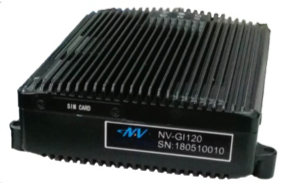

Guide for Navtech NV-GI120¶
NV-GI120 is a position and orientation system for automatic drive of NAV Technology. With the
high-precision GNSS board card and high-precision MEMS gyro, it has the real-time attitude
and position resolving ability while transmitting the original data of the sensor and board card
for post-processing high-precision resolution.
----Navtech official brochure

NV-GI120 integrates the GNSS receiver and MEMS IMU device into a compact package to provide high precision localization results. It supports dual antenna configuration and multi-frequency reception.
Installation¶

The antennas(antennae) can be connected to the module via SMA connection.
A cable bundle is provided with the navigation module. One cable breaks out to multiple connectors to handle communication and configuration.
The configuration is similar to what can be done on Novatel devices. Please contact the vendor for detailed instructions.
The table for the labels on the break out cable bundle and the corresponding explanations/translations is shown below:
Labels
Explanations
PPS
Pulse per second
导航
navigation output （replaceable by the ethernet)
板卡
——-
里程
Odometer connection
调试
configuration
网口
ethernet
Two naked wire
Power （red and blue)
扩展
Extension
Disclaimer¶
This device is Apollo Hardware Development Platform Supported